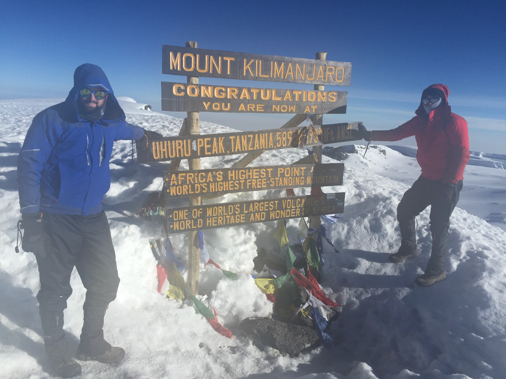

About Me
Educational Background
I am currently a fourth mechanical engineering student at the University of Limerick. My journey towards becoming a mechanical engineer has been an exciting one, filled with numerous opportunities for growth and learning. One of the distinctive features of my education as an engineer at the UL is the emphasis on hands-on learning experiences. Our university places a strong emphasis on practical education, with state-of-the-art laboratories and workshops where we can apply theoretical knowledge to real-world problems. Whether it's designing and building a prototype in the mechanical engineering lab or conducting experiments to analyze material properties, these experiences have been invaluable in shaping my skills and understanding of the field.
Hobbies
Mountaineering is a demanding and thrilling hobby that I've come to appreciate over the years. I was introduced to the outdoors and mountaineering at a young age, which left a lasting impression on me. At 8 years old, I successfully scaled Carauntwohill, a peak standing at 1,039 meters. By the age of 10, I had also conquered Ben Nevis, the highest mountain in the British Isles, at 1,345 meters. In 2018, at 16 years old, I reached the summit of Kilimanjaro, the world's highest free-standing mountain, which stands at 5,895 meters. This accomplishment marked a significant milestone in my mountaineering journey. Since then, I've had the opportunity to explore the French, Swiss, and Italian Alps, further broadening my experiences and honing my mountaineering skills. Looking to the future, a goal of mine would be to summit all of the Seven Summits. This is a renowned mountaineering challenge that involves scaling the highest peak on each of the seven continents. It's considered one of the ultimate accomplishments in the world of mountaineering. Scaling Mt. Everest, Aconcagua, Denali, MT. Kilimanjaro, Mt.Elbrus, Vinson Massif and Puncak Jaya is lifelong pursuit for many climbers and an incredible adventure that spans the globe.